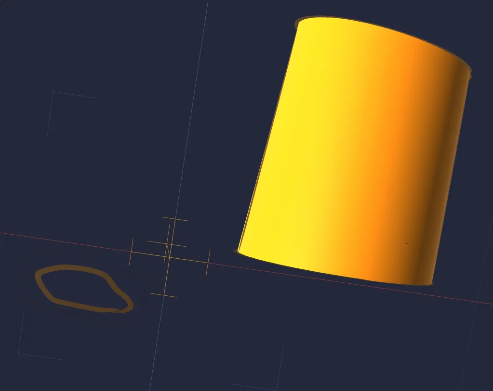
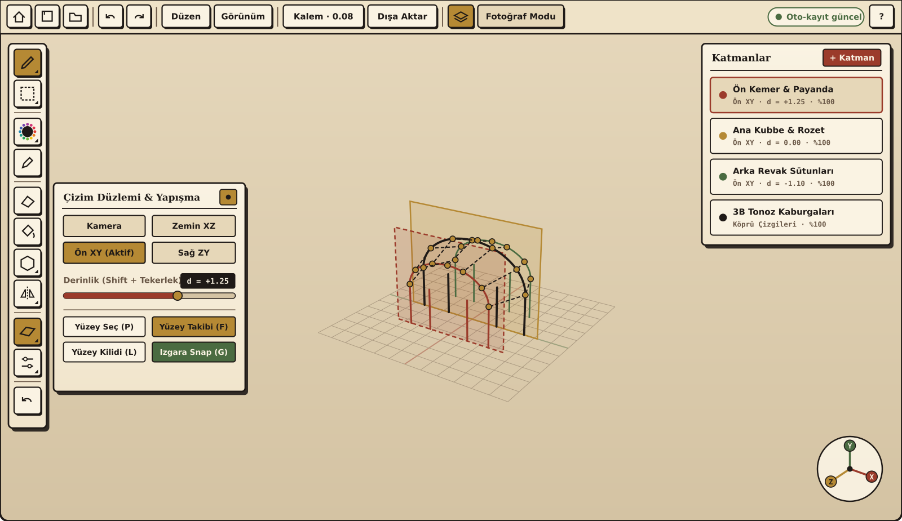
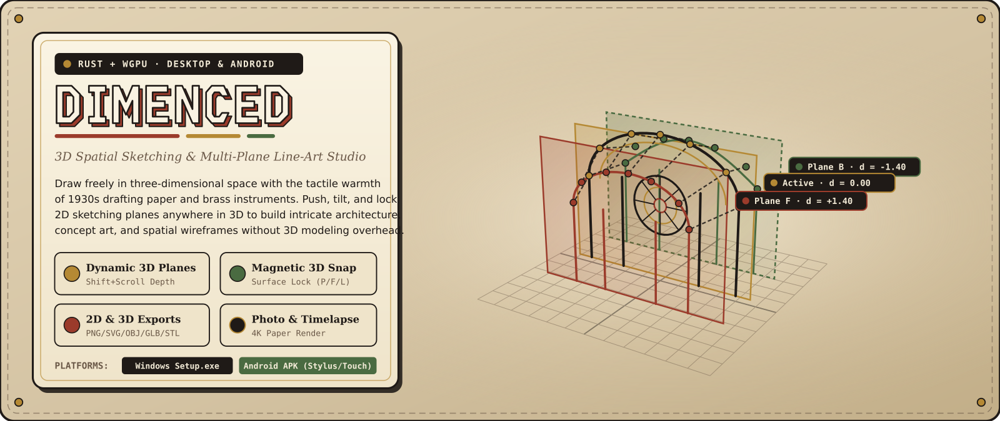

Düzlemlerde çizim
Çizgilerin sahnede gerçek bir konuma sahip. Döndür, kaydır, yakınlaştır. “Yeni düzlem” diye bir düğme aramana gerek yok: başka bir açıdan çizdiğinde düzlem kendiliğinden oluşur.
Dimenced, normal bir defterde çizer gibi çizdiğin çizgileri görünmez düzlemlere oturtur. Kamerayı döndürüp başka açıdan çizdiğinde yeni bir düzlem kendiliğinden oluşur.
Çizgilerin sahnede gerçek bir konuma sahip. Döndür, kaydır, yakınlaştır. “Yeni düzlem” diye bir düğme aramana gerek yok: başka bir açıdan çizdiğinde düzlem kendiliğinden oluşur.
Çizgiyi 0,4 saniye bekletince düz çizgi, daire ya da kutu olur. Uç noktalara yapışma, eksen ve paralel çıkarımı hizalamayı senin yerine yapar.
Basınç, hız ve eğime duyarlı kalemler, kaligrafi uçları, stabilizatör ve ayarlanabilir eğriler. Grafit, marker, mürekkep ve fırça gibi hazır fırçalar hazır gelir.
Silindir gibi bombeli yüzeylerde çiz ve doldur. Çizgi yüzeyin üstünde kalır, rengi karışmaz.
Kare kare animasyon, soğan zarı, döngü ve ping-pong. Çizimini baştan sona hızlandırılmış izle, kamerayı serbestçe oynat. Foto modu sahneyi istediğin açıdan kaydeder.
Basınç algılama, avuç reddi ve kalem düğmesi kısayolları. Kalemle çizerken elinle ekranı döndürebilir, kaydırabilir, yakınlaştırabilirsin.
Katmanlar, canlı simetri, oda aracı, boya kovası, vektör ve piksel çizim kipi, hazır temalar (Catppuccin, Nord, Gruvbox, Dracula ve daha fazlası) ve 12 dil.



Fırçayı seç ve defterde çizer gibi çiz. Çizgilerin görünmez bir düzleme oturur.
Kamerayı çevir. Yeni açıdan çizdiğinde yeni düzlem oluşur; derinliği Shift ile tekerlekle ayarlarsın.
2B için PNG, JPEG, WebP, GIF, SVG, PDF. 3B için OBJ, PLY, GLB, VTK. Timelapse paketi de var.
En güncel sürüm GitHub Releases üzerinden indirilir.
Linux’ta AppImage’i çalıştırılabilir yapmak için chmod +x Dimenced-x86_64.AppImage komutunu kullan.
Uygulama ücretsiz. 2B ve timelapse dışa aktarımları da ücretsiz. 3B dışa aktarımlar token ile yapılır; ilk açılışta 100 ücretsiz token hediye edilir.
Hesap gerekmez, reklam yoktur. Çizimlerin cihazında kalır. Ayrıntılar gizlilik sayfasında.
Windows 10 ve 11, macOS (Apple Silicon ve Intel), Linux (x86_64) ve Android 8.0 ve üzeri. iPad ve iOS sürümü planlanıyor.
Evet. Basınç algılama, avuç reddi ve kalem düğmesi kısayolları var. Android’de tablet ve kalem için tasarlandı.
Şimdilik AppImage ve .tar.gz sunuluyor. AppImage çoğu dağıtımda kurulum gerektirmeden çalışır.